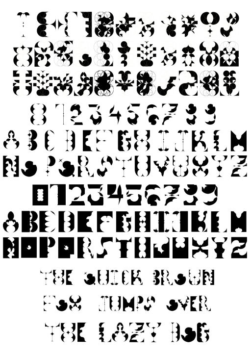
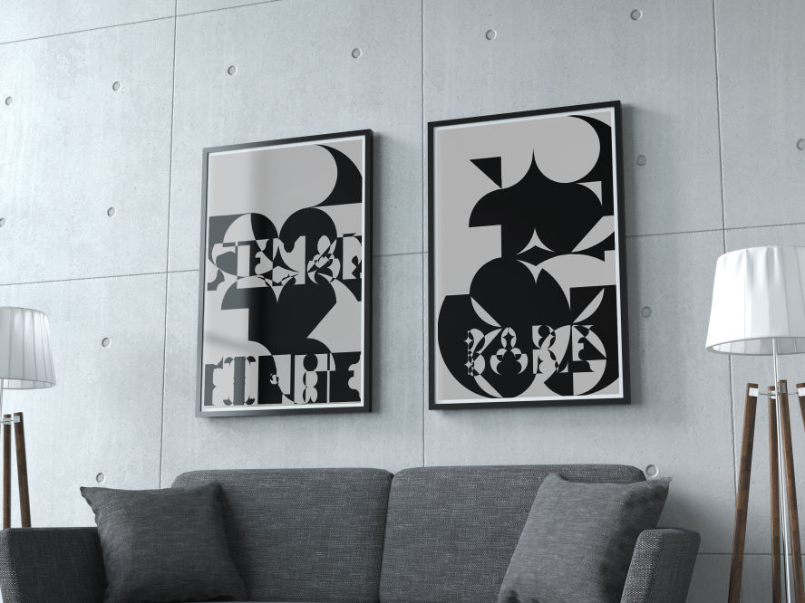
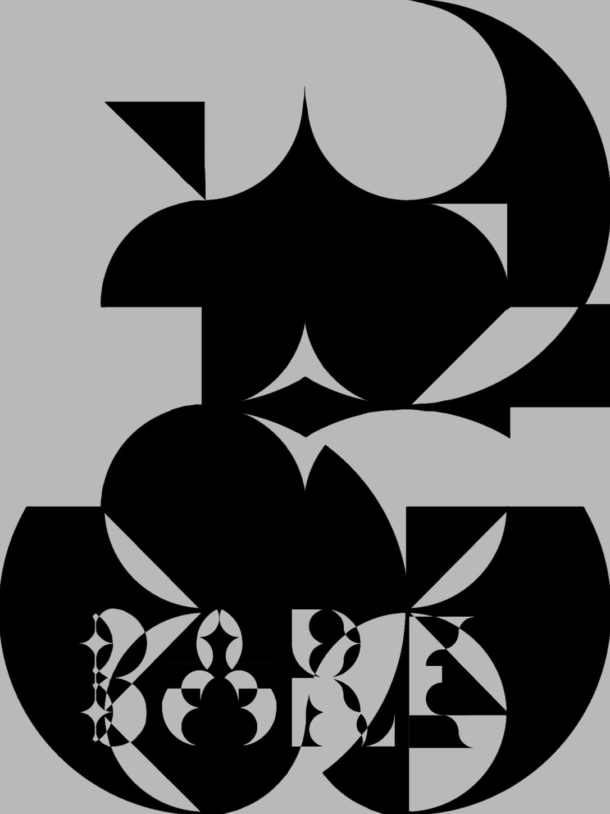
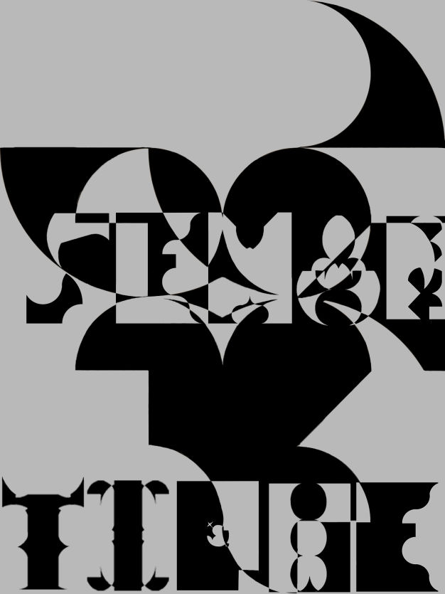
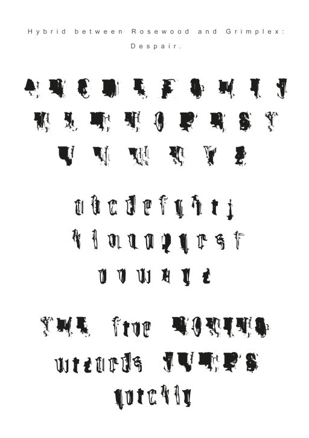
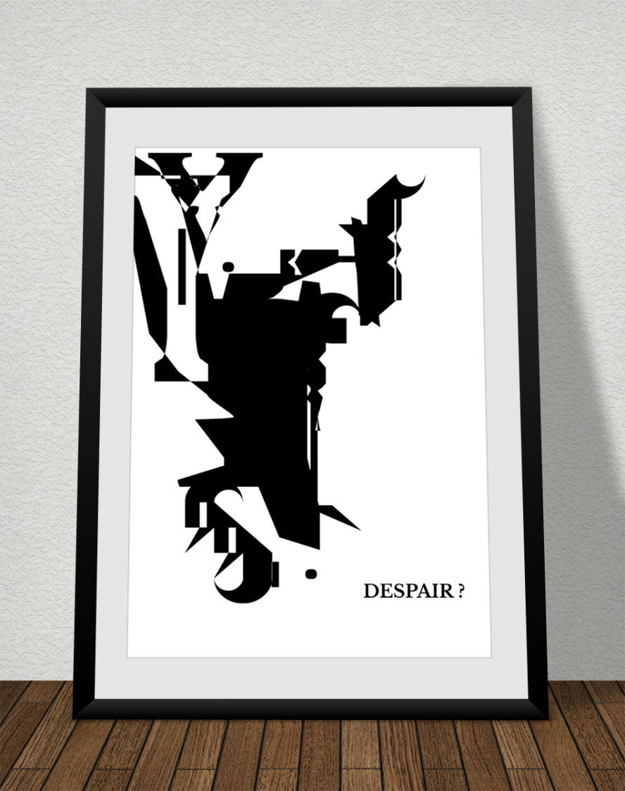
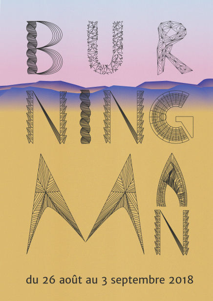
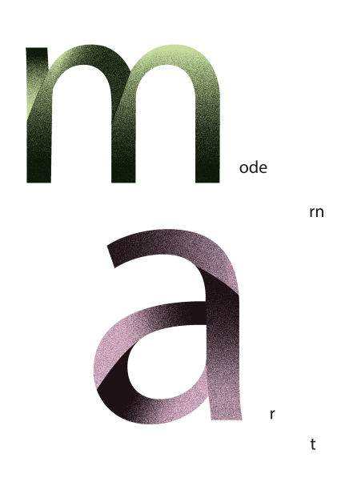
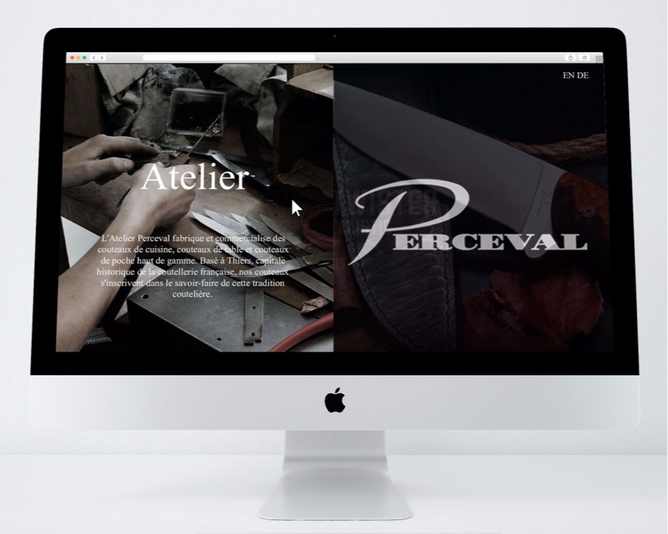
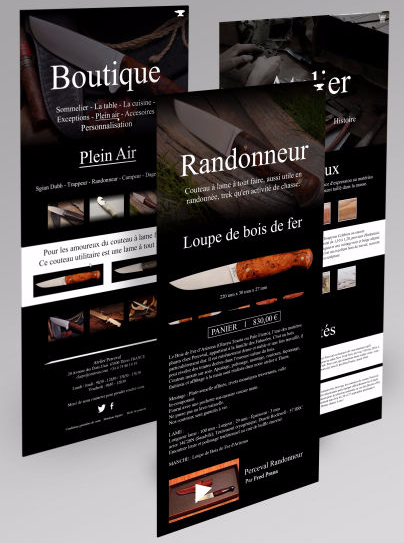

Bare Sémantique: Starting with abstract figures formed by filling a grid, this typography was created in both a regular and bold. With sharp edges yet round and welcoming aspect this typography stays visually interesting while staying mesterious.




Despair: This typography was made by merging two already existing typographies; selecting shapes and altering them to make this font. With it's austere look, Despair still impose a gothic yet classic vibe.


Burning Man Festival: Idea of a poster realized for the Burning Man festival based on the diverse arcitecture dear to the festival. Realized with with the help of Gaëtan Vergoz


Modern Art: Poster realized during a research on forms and letters.
Cutlery Perceval: Mock-up of a website designed during a UX Web design workshop for the cutlery Perceval. A home page, a shopping and a workshop page were design; along so with a product page. If you want to know moer abou the development click here.

Home Page

User pages
Manualis: Thisset was made to attract the eye on how complexe simple things like hands can ba. Setting particular oppressing and overwhelming mood facing the tools hands are.